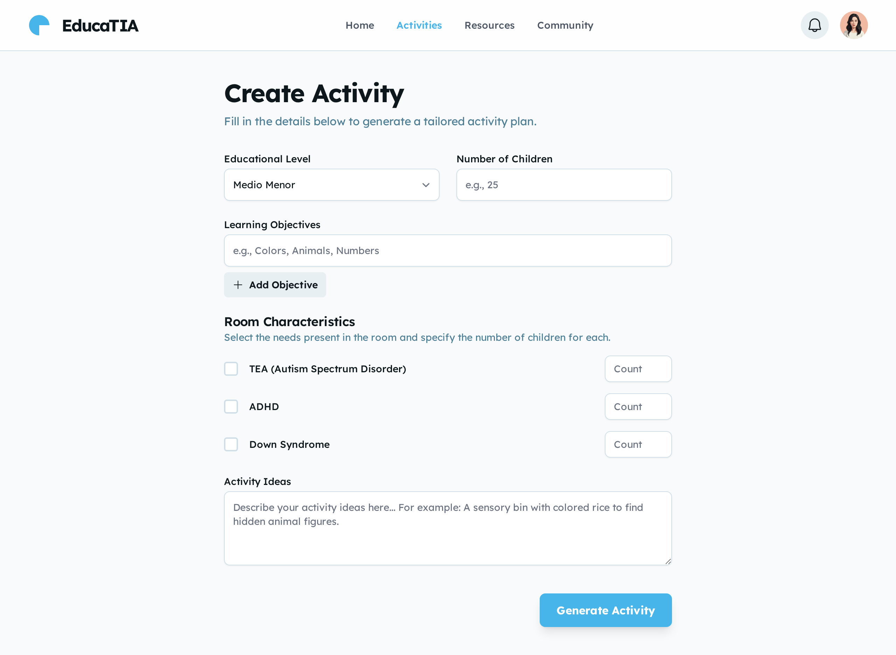

Bienvenidas EducaTIA
Empoderando educadoras y al servicio de tu vocación.
En EducaTIA encontrarás un espacio creado con cariño y propósito, donde las educadoras de párvulo pueden diseñar actividades significativas, accesibles y llenas de creatividad
